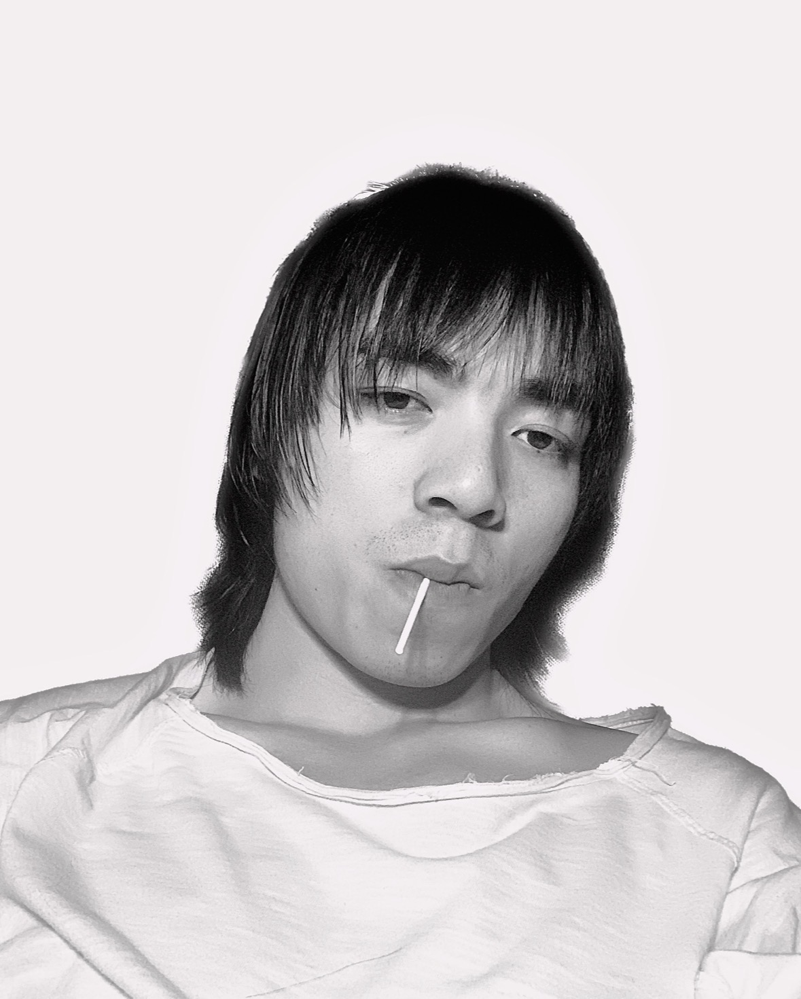

01
最高
Highest / Zhang Zhaohao
艺术家、导演、写作者
最高，日本博士后。以“最高 / 张昭昊”持续进行行为、影像、写作、设计与跨媒介项目。2016 年起参与创建强碱艺术，曾创作实验电影《96'-House》以及多件行为作品；2020 年后在上海与司屠、吕德生展开“都市罗曼史有限公司”等共同实践。
其个人网站呈现的实践横跨行为艺术、独立电影、纯文学与设计，并持续把日常经验、文字和传播媒介转译为作品。
人物照片：第五届（2022）水泥公园现场艺术节公开艺术家档案
EDIT / 重新组织